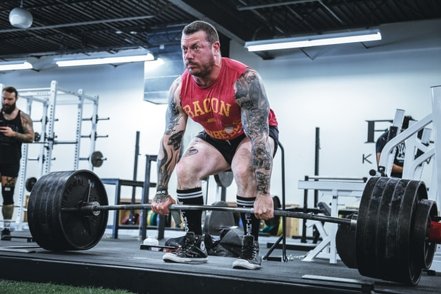

웨이트 트레이닝을 대표하는 3대 운동(스쿼트, 벤치 프레스, 데드리프트) 중 하나이다.
위 프랑코 콜럼부(1941년 8월 7일 ~ 2019년 8월 30일)의 사진을 보면 알겠지만 다양한 웨이트 트레이닝 가운데 상당히 무거운 중량을 다루는 축에 낀다. 때문에 부상 위험이나 사고 위험이 있어서 전문가의 지도가 이뤄지는 환경에서 운동해야 한다.
다만, 제대로 배우고 원칙을 준수한다면 안전하며 데드리프트는 전신의 근육을 활용하는 효율적, 효과적인 운동이다. 전문적인 지도와 보호가 이뤄진다는 전제하에 누구라도 강력히 추천하는 운동이다.